Ce que disent d'eux les recensements de 1871, 1881 et 1891,
les actes notariés et les papiers gardés par la famille.
Recherche : Patrick Blanchet
Novembre 2026
Préparé pour leurs descendants.
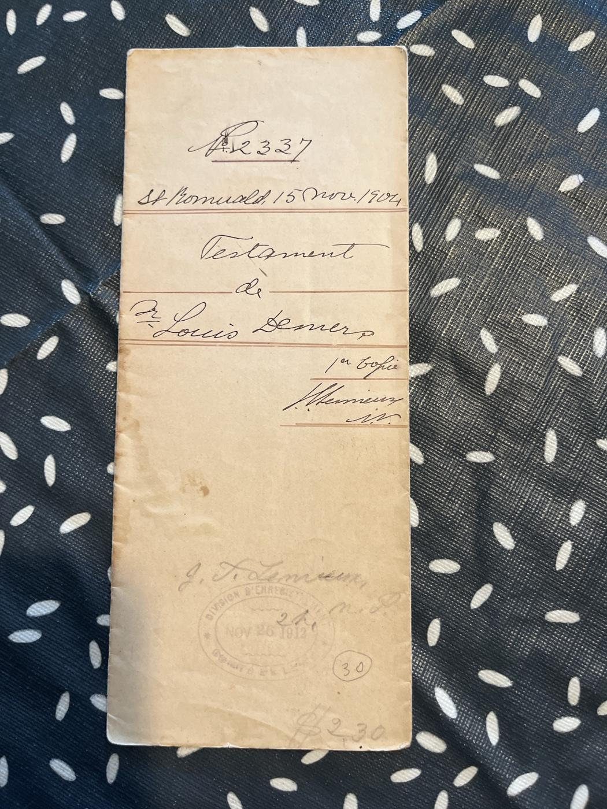
Louis Demers naît le 27 février 1844 à Saint-Jean-Chrysostome. Léocadie Beaudoin naît le 22 août 1846. Ils se marient le 19 septembre 1865, à Saint-Jean-Chrysostome, et s'établissent à Saint-Romuald d'Etchemin, près du fleuve, du côté de New Liverpool, près de l'embouchure de la Chaudière. C'est là que les trois recensements de 1871, 1881 et 1891 les trouvent, avec leurs enfants.
Louis est d'abord journalier, comme la plupart des hommes du quartier, qui vivait alors du commerce du bois et du chargement des navires. En 1891, il est devenu boucher, à son compte ; à sa mort, il est « boucher et commerçant de bois ». Le couple a au moins huit enfants : une fille, Léocadie, et sept garçons, Charles, Joseph, Ernest, Alfred, Malcolm, Eusèbe et Alphonse. Tous deux savent lire et écrire, et signent leurs actes.
Avant 1912, ils deviennent propriétaires d'un terrain de cinquante pieds sur cent, avec maison, entre le chemin public et la rive du fleuve : le lot n° 529 du cadastre de Saint-Romuald. Louis meurt le 30 octobre 1912 et laisse tout à sa femme. Léocadie vit encore dix-neuf ans. En 1928, à 81 ans, elle donne la maison à son plus jeune fils, Alphonse, à condition qu'il la loge et la nourrisse « comme le doit faire un bon fils pour sa mère ». Elle meurt le 5 mai 1931, à Saint-Romuald.
Comment lire ce dossier. Chaque fait est donné avec sa source. Les recensements et les actes que la famille a gardés sont des sources directes. Les dates tirées d'arbres généalogiques en ligne (MyHeritage, Filae) sont signalées comme telles : elles sont vraisemblables, mais n'ont pas encore été vérifiées sur les registres. Les années de naissance des enfants sont calculées d'après les âges déclarés aux recenseurs, qui sont souvent approximatifs d'un an ou deux.
| 27 févr. 1844 | Naissance de Louis Demers à Saint-Jean-Chrysostome (arbre MyHeritage). |
| 22 août 1846 | Naissance de Léocadie Beaudoin, fille d'Henri Beaudoin et d'Antoinette Lepinay (arbre Filae). |
| 6 mai 1856 | Un Louis Demers, probablement le père, cède une terre de Saint-Jean-Chrysostome à Alexis Pichette. |
| 19 sept. 1865 | Mariage de Louis Demers et de Léocadie Beaudoin à Saint-Jean-Chrysostome (arbre Filae). |
| Oct. 1870 | Naissance de leur fils Charles. |
| Avril 1871 | Recensement : Louis, journalier, 27 ans, Léocadie, 24 ans, et deux enfants, à New Liverpool ; la maison est partagée avec le ménage de Benjamin Bourassa. |
| Avril 1881 | Recensement : Louis, journalier, 36 ans, Léocadie, 34 ans, et sept enfants. |
| 23 nov. 1886 | Le lot n° 529, maison au bord du fleuve, est vendu par John Brown à Robert Ahern ; l'acte passera plus tard aux Demers avec le terrain. |
| Avril 1891 | Recensement : Louis, boucher, 47 ans, patron, Léocadie, 44 ans, et sept fils, dans une maison de bois d'un étage et de sept pièces. |
| 1896-1908 | Mariage des fils Charles (1896), Alfred (1898), Joseph (1900) et Alphonse (1908) à Saint-Romuald. |
| 15 nov. 1904 | Testament de Louis Demers, qui lègue tous ses biens à sa femme. |
| 30 oct. 1912 | Mort de Louis Demers à Saint-Romuald, « boucher et commerçant de bois ». |
| 22 nov. 1912 | Léocadie déclare l'héritage : elle possède désormais seule le lot n° 529. |
| 31 juill. 1914 | Premier testament connu de Léocadie Beaudoin, en faveur de son fils Alphonse. |
| 11 août 1928 | Léocadie donne la maison du lot n° 529 à Alphonse et refait son testament le même jour. |
| 5 mai 1931 | Mort de Léocadie Beaudoin à Saint-Romuald (arbre Filae). |
Louis Demers naît le 27 février 1844 à Saint-Jean-Chrysostome, la paroisse voisine, au sud de Saint-Romuald. Cette date vient d'un arbre en ligne ; elle s'accorde avec les âges qu'il déclare aux recenseurs : 27 ans en 1871, 36 ans en 1881, 47 ans en 1891. Tous les recensements le disent né dans la province de Québec, de parents nés eux aussi au Québec, catholique et d'origine française.
Ses parents ne sont pas encore connus avec certitude. Un acte notarié de 1874 rappelle qu'un Louis Demers a cédé une terre de Saint-Jean-Chrysostome à Alexis Pichette le 6 mai 1856, devant le notaire A. Trudelle ; c'est probablement son père. Une piste reste à vérifier : en 1873, un Louis Demers marié à Geneviève Gosselin habite Saint-Jean-Chrysostome, avec ses filles Euphrasie, Adélaïde et Virginie. S'il s'agit des parents de Louis, ces trois femmes seraient ses sœurs. Rien ne le prouve encore : l'acte de baptême de Louis, en 1844, le dirait.
Aux recensements de 1871 et de 1881, Louis est journalier : il loue ses bras, sans doute aux chantiers de bois et aux quais de New Liverpool. En 1891, il est boucher et coche la colonne « patron » : il est à son compte. Son fils Joseph, 17 ans, est boucher lui aussi, inscrit comme employé : sans doute chez son père, mais le recensement ne le dit pas. Son testament de 1904 le dit encore boucher. À sa mort, en 1912, sa veuve le décrit comme « boucher et commerçant de bois » ; elle-même, en 1914 et en 1928, le dit « commerçant ».
Oui. Les recensements de 1871 et de 1891 le comptent parmi ceux qui savent lire et écrire, et il signe lui-même son testament de 1904 : le notaire a rayé la formule prévue pour ceux qui « ne savent écrire ni signer ». En 1908, il signe aussi l'acte de mariage de son fils Alphonse.
Le 15 novembre 1904, chez lui, devant le notaire Jean-Théophile Lemieux et deux témoins, Honoré McReady, marchand, et Paul Girard, inspecteur de bois, Louis Demers fait son testament. Il demande qu'on chante un service le jour de ses funérailles et un autre dans l'année, et qu'on dise vingt-cinq messes basses. Il lègue tous ses biens à « Dame Léocadie Beaudoin, mon épouse actuelle », qu'il nomme sa légataire universelle et son exécutrice testamentaire. Aucun de ses enfants n'est nommé.
Louis Demers meurt à Saint-Romuald le 30 octobre 1912, à 68 ans. La date est donnée par la déclaration de transmission que sa veuve fait faire trois semaines plus tard, le 22 novembre 1912, pour faire enregistrer l'héritage ; le testament et cette déclaration sont enregistrés le même jour, le 26 novembre 1912, au bureau d'enregistrement du comté de Lévis.
Léocadie Beaudoin naît le 22 août 1846. Ses parents sont Henri Beaudoin et Antoinette Lepinay. D'après le même arbre, elle a douze frères et sœurs : Joseph, Marie Agnès, Marie Odélie, Charles, Marie Émilie, Louis, Marie Louise, Marie Antoinette, Marie Elmire, Marie Adèle, Henri et Louis Onézime. Ces renseignements viennent de l'arbre Filae ; ils restent à vérifier sur les registres.
Les recensements l'inscrivent sous le nom de son mari, « Léocadie Demers », comme toutes les femmes mariées de l'époque. Son nom de naissance, Beaudoin, est donné par les actes de mariage de ses fils et par tous les actes notariés. Une fois, à l'acte de mariage de Joseph en 1900, il est écrit « Beaulieu ».
Elle épouse Louis Demers le 19 septembre 1865 à Saint-Jean-Chrysostome ; elle a 19 ans, lui 21. La déclaration de 1912 précise qu'ils étaient mariés « en communauté de biens » : ce qu'ils acquéraient pendant le mariage appartenait aux deux.
À la mort de Louis, elle hérite de tout. Le 22 novembre 1912, elle fait enregistrer ses droits sur la maison : elle en possédait déjà la moitié par la communauté de biens, et son mari lui lègue l'autre moitié. Elle signe « Léocadie Beaudoin Demers ».
Le 31 juillet 1914, devant le notaire Joseph Boutin Bourassa, elle fait un testament qui favorise son fils Alphonse : il recevra ses meubles de ménage et sa maison de New Liverpool. Ses autres enfants se partageront son linge et ses vêtements, et tous, Alphonse compris, le reste de son argent. Elle réserve 400 piastres pour ses soins, ses funérailles, deux services chantés et des grand-messes. Son fils Charles sera son exécuteur testamentaire, et Joseph le remplacera au besoin. Les témoins sont le docteur Narcisse G. Cantin, médecin, et Ernest Robitaille, employé civil.
Le 11 août 1928, elle refait son testament devant le même notaire (acte n° 10135). Ce second testament est dans les papiers de la famille, mais n'a pas encore été photographié ; il remplace sans doute celui de 1914.
Le même jour, le 11 août 1928, à 81 ans, elle donne de son vivant à Alphonse la maison et le terrain du lot n° 529, avec tous ses meubles et le linge de la maison. Elle lui remet aussi une dette de cent piastres. En échange, Alphonse paiera les taxes et une petite rente foncière annuelle, et devra « recevoir chez lui la donatrice quand elle voudra y aller demeurer et, alors, de la nourrir et entretenir convenablement et comme le doit faire un bon fils pour sa mère ». L'acte est passé chez Alphonse ; Léocadie et lui le signent.
Léocadie Beaudoin meurt le 5 mai 1931 à Saint-Romuald, à 84 ans (arbre Filae ; l'acte de sépulture reste à retrouver).
Les trois recensements ont été faits au début d'avril. Les noms et les âges sont donnés tels que le recenseur les a écrits ; les âges sont ceux qu'on lui a déclarés. Les recensements de 1871 et de 1881 rangent Saint-Romuald en deux divisions ; les Demers sont dans la division 2. Le formulaire de 1891 n'a plus de case « division » et dresse une seule liste pour toute la paroisse ; mais la famille habite toujours le même secteur, celui de l'ancienne division 2. Patrick Blanchet l'a constaté, et la reconstitution des divisions de 1891 faite pour ce projet, maison par maison, place aussi la maison des Demers dans la division 2 : huit de ses membres y étaient déjà en 1881.
| Nom | Âge | État | Métier | Remarque |
|---|---|---|---|---|
| Louis Demers | 27 | marié | journalier | chef de la famille n° 102 |
| Léocadie Demers | 24 | mariée | ||
| Léocadie Demers | 7 | va à l'école | ||
| Charles Demers | 6 mois | né en octobre 1870 | ||
| Benjamin Bourassa | 26 | marié | journalier | autre famille de la même maison (n° 101) |
| Philomène Bourassa | 27 | mariée | ||
| Albina et Belzémire Bourassa | 4 et 2 | leurs filles |
Le jeune ménage partage sa maison avec celui de Benjamin Bourassa, journalier lui aussi. Tous sont nés au Québec, catholiques, d'origine française ; le recenseur n'a noté pour aucun des adultes la marque « ne sait pas écrire ».
| Nom | Âge | État | Métier | Remarque |
|---|---|---|---|---|
| Louis Demers | 36 | marié | journalier | chef de la famille n° 111 |
| Léocadie Demers | 34 | mariée | ||
| Charles | 11 | à l'école | ||
| Joseph | 7 | à l'école | ||
| Ernest | 5 | à l'école | ||
| Alfred | 3 | |||
| Malcolm | 2 | |||
| Eusèbe | 5 mois | né dans l'année | ||
| Léocadie | 17 |
La famille habite seule sa maison. La fille aînée, Léocadie, 17 ans, est inscrite en dernier, après les garçons.
| Nom | Âge | Lien | Métier | Remarque |
|---|---|---|---|---|
| Louis Demers | 47 | chef | boucher | patron ; sait lire et écrire |
| Léocadie Demers | 44 | épouse | sait lire et écrire | |
| Charles | 20 | fils | journalier | employé |
| Joseph | 17 | fils | boucher | employé |
| Ernest | 16 | fils | ||
| Alfred | 14 | fils | ||
| Malcom | 11 | fils | ||
| Eusèbe | 10 | fils | ||
| Alphonse | 3 | fils |
Le recensement de 1891 décrit aussi la maison : elle est en bois, d'un étage, et compte sept pièces. Tous les membres de la famille sont dits nés au Québec, de parents nés au Québec, canadiens-français et catholiques. La fille aînée, Léocadie, n'est plus avec eux : elle avait alors environ 27 ans et s'était sans doute mariée.
Où était la maison ? Selon les notes de Patrick Blanchet, la famille habitait le 1617, chemin du Fleuve, de 1871 à 1891 sans déménager. Les papiers de famille montrent qu'en 1912 et en 1928 la maison familiale est sur le lot n° 529, au bord du fleuve. Mais en 1886 ce lot était encore la maison des Brown, et en 1871 les Demers vivaient dans une autre maison que celle d'Arthur Brown. Ou bien les Demers ont déménagé sur le lot 529 après l'avoir acheté, ou bien le lot 529 était un second bien (la boucherie, peut-être). L'acte d'achat du lot permettrait de trancher.
Huit enfants paraissent aux recensements. Les années de naissance sont calculées d'après les âges déclarés, sauf mention contraire. D'autres enfants ont pu naître et mourir entre deux recensements, ou naître après 1891 : seuls les registres de baptêmes le diraient.
Fille aînée, 7 ans en 1871 (elle va déjà à l'école) et 17 ans en 1881 ; absente en 1891. Ses âges la font naître vers 1864, soit avant le mariage de ses parents en septembre 1865. Ou bien les âges sont approximatifs, ou bien c'est une parente élevée par le couple. Son acte de baptême et son mariage restent à trouver.
Six mois au recensement d'avril 1871, né en octobre 1870 ; journalier en 1891. Il épouse Mary Jane Cadorette, fille de Georges Cadorette et d'Amanda Villers, le 19 juin 1896 à Saint-Romuald. Sa mère le nomme son exécuteur testamentaire en 1914.
7 ans en 1881, 17 ans en 1891, déjà boucher comme son père. Il épouse Honoré Gagné, fille de Thomas Gagné et de Philomène Gingras, le 7 mai 1900 à Saint-Romuald. Sa mère le désigne en 1914 pour remplacer Charles comme exécuteur, au besoin.
5 ans en 1881 (à l'école), 16 ans en 1891. Aucun autre document pour l'instant.
3 ans en 1881, 14 ans en 1891. Il épouse Balzemine Cadorette, fille de Léon Cadorette et d'Angèle Cadorette, le 1er août 1898 en l'église de Saint-Romuald.
2 ans en 1881, 11 ans en 1891 (écrit « Malcom »). Aucun autre document pour l'instant.
Cinq mois au recensement d'avril 1881, 10 ans en 1891. Aucun autre document pour l'instant.
Le plus jeune, 3 ans en 1891, et celui sur qui la famille a gardé le plus de papiers.
Mariage. Le 15 juin 1908, à Saint-Romuald, encore mineur, il épouse Éléonore Roberge, mineure elle aussi, fille de David Roberge et d'Éléonore Couture, de la même paroisse. Les deux jeunes gens sont parents : l'archevêché de Québec leur accorde une dispense du « troisième degré de consanguinité », ce qui veut dire qu'ils sont cousins issus de germains. Les témoins sont son père, Louis Demers, et Damase Vallières.
Charpentier au pont de Québec. De 1914 environ à 1918, il est charpentier pour la St. Lawrence Bridge Company, à la construction du pont de Québec. La compagnie le recommande en 1918 comme « un bon ouvrier, régulier », et « un charpentier de premier ordre ».
Contremaître. De 1926 environ à 1931, il est contremaître charpentier pour la Northern Construction Company et J. W. Stewart. Il dirige les coffrages de béton des nouveaux travaux du port de Québec, à l'Anse-au-Foulon, puis la construction des caissons et des coffrages à Trois-Rivières. La lettre de 1931 dit qu'il sait lire les plans et diriger l'implantation des ouvrages.
La maison familiale. Sa mère le favorise dans son testament de 1914 et lui donne la maison du lot 529 en 1928, à charge de l'héberger.
Veuvage. Éléonore Roberge meurt le 13 avril 1938 et est inhumée le 18 avril au cimetière de Saint-Romuald.
Les papiers de la famille permettent de suivre un même terrain pendant plus de quarante ans. C'est le lot n° 529 du cadastre de la paroisse de Saint-Romuald, comté de Lévis : un emplacement de cinquante pieds de front (quarante, selon l'acte de 1928) sur environ cent pieds de profondeur. Il est borné au sud par le chemin public et au nord par la grève du Saint-Laurent, avec une maison et d'autres bâtiments.
Le recensement de 1871 situe la maison d'Arthur Brown entre celles de John Cullen et de Charles Ward : ce sont exactement les voisins que nomme l'acte de 1886. Le lot 529 est donc très vraisemblablement la maison où vivait la famille Brown en 1871.
Ces pièces originales ont été photographiées par Patrick Blanchet en novembre 2026. Leur transcription complète suit, et les photos sont reproduites à la fin du dossier.
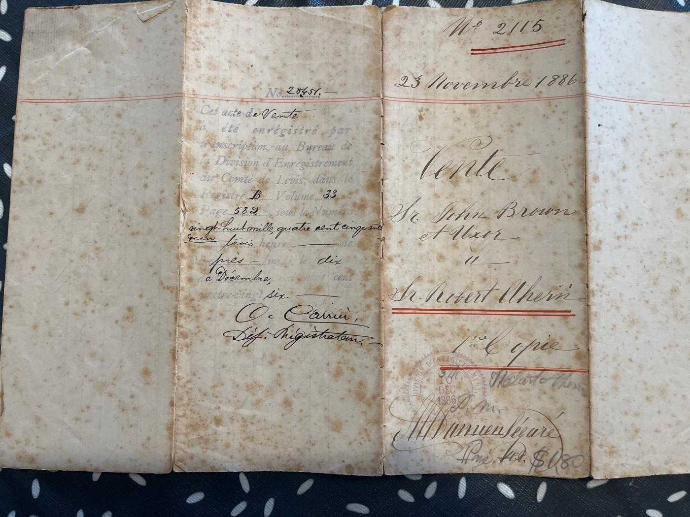
Copie notariée, minute n° 2115 du notaire M. U. Damien [Séguré ?], 23 novembre 1886 ; enregistrée à Lévis le 10 décembre 1886.
Le plus ancien titre du terrain. La première page manque aux photos.
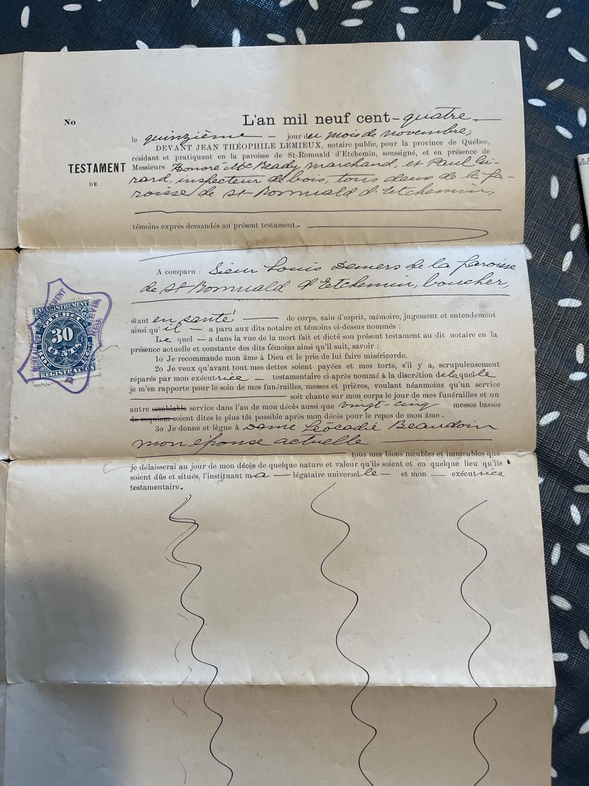
Copie notariée, minute n° 2337 du notaire Jean-Théophile Lemieux, 15 novembre 1904 ; enregistrée à Lévis le 26 novembre 1912.
Louis lègue tout à sa femme.
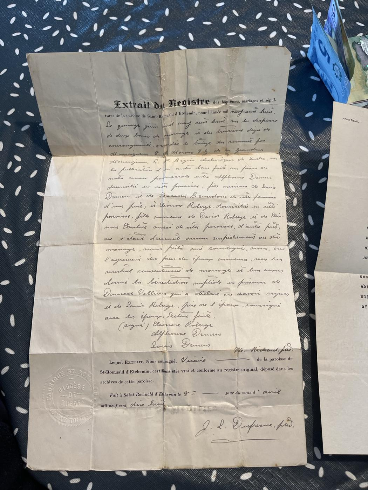
Registre de la paroisse de Saint-Romuald d'Etchemin ; extrait certifié par le vicaire J. L. Dufresne le 8 avril 1918.
Donne les parents des deux époux et la dispense de consanguinité.
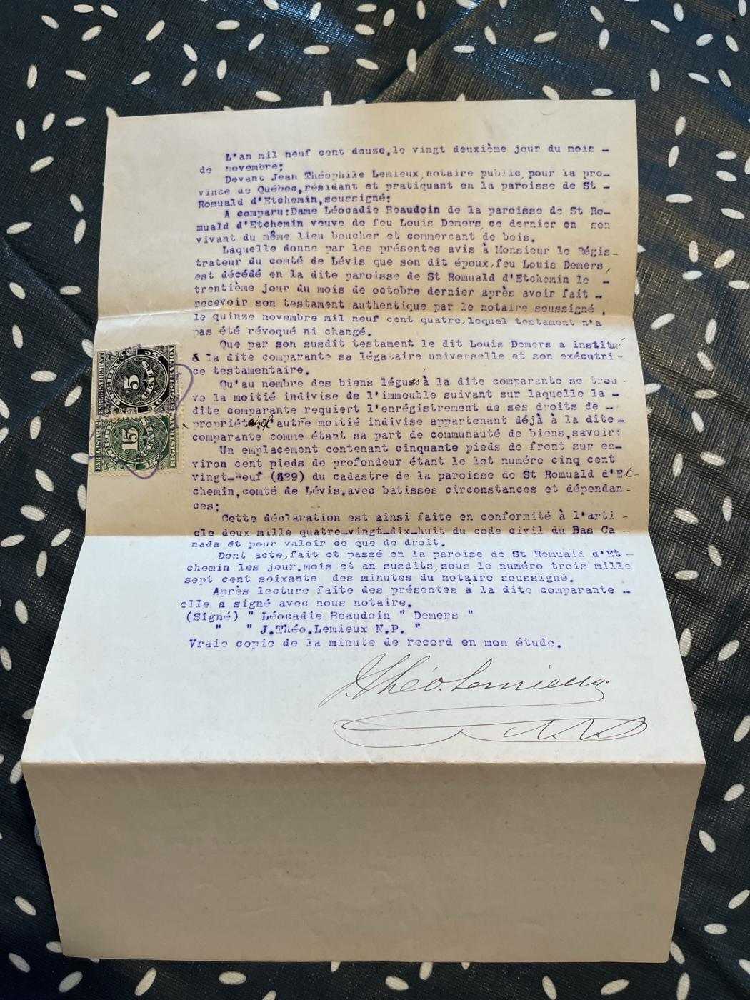
Copie notariée, minute n° 3760 du notaire J.-Théophile Lemieux, 22 novembre 1912 ; enregistrée à Lévis le 26 novembre 1912.
Donne la date de mort de Louis et décrit le lot 529.
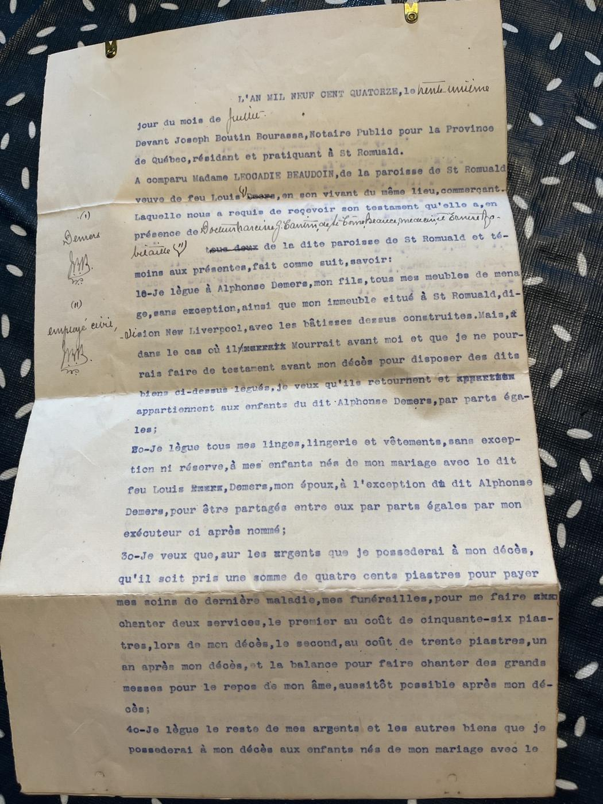
Copie notariée, minute n° 6884 du notaire Joseph Boutin Bourassa, 31 juillet 1914.
Nomme Alphonse, Charles et Joseph.
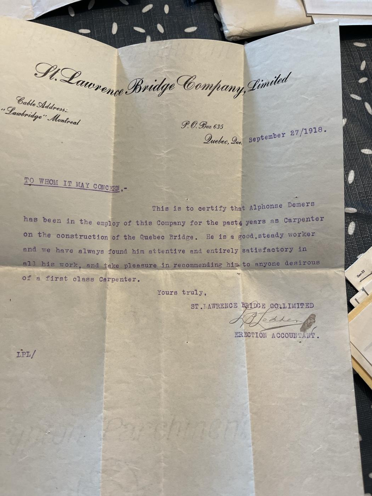
Lettre originale, en anglais, Québec, 27 septembre 1918.
Alphonse, charpentier au pont de Québec.
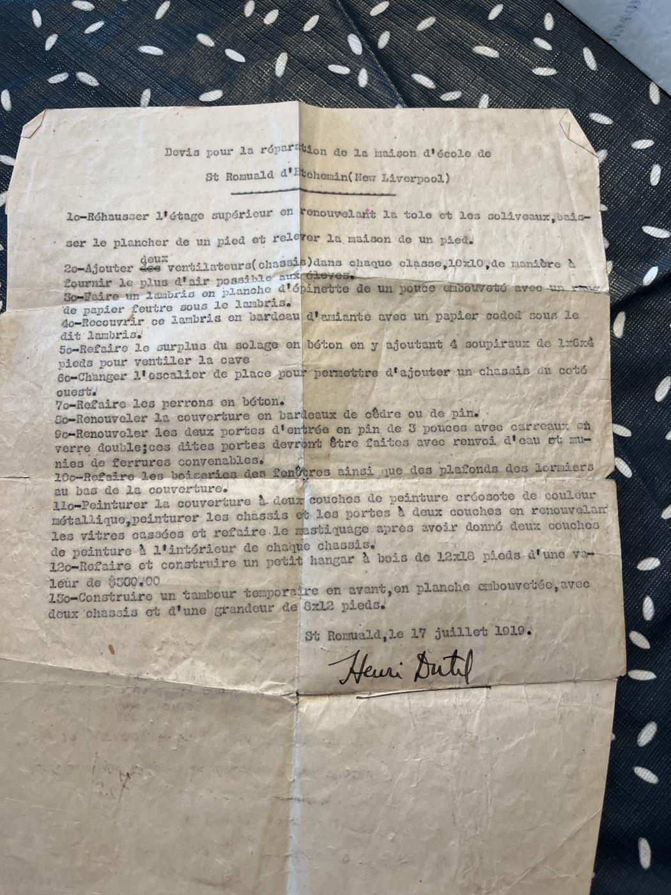
Devis signé Henri Dutil, Saint-Romuald, 17 juillet 1919.
Aucun Demers n'y est nommé. Alphonse, charpentier, a peut-être soumissionné pour ces travaux : c'est une simple hypothèse.
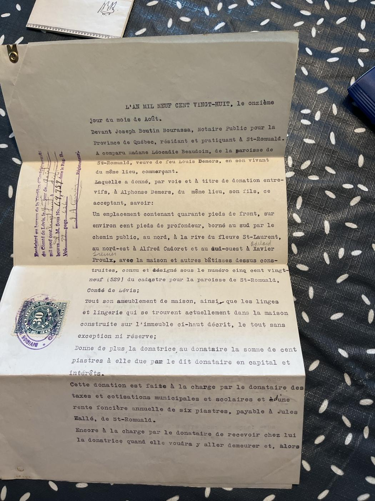
Copie notariée, minute n° 10134 du notaire Joseph Boutin Bourassa, 11 août 1928 ; enregistrée à Lévis le 16 août 1928.
Léocadie donne le lot 529 à son fils, qui s'engage à la garder chez lui.
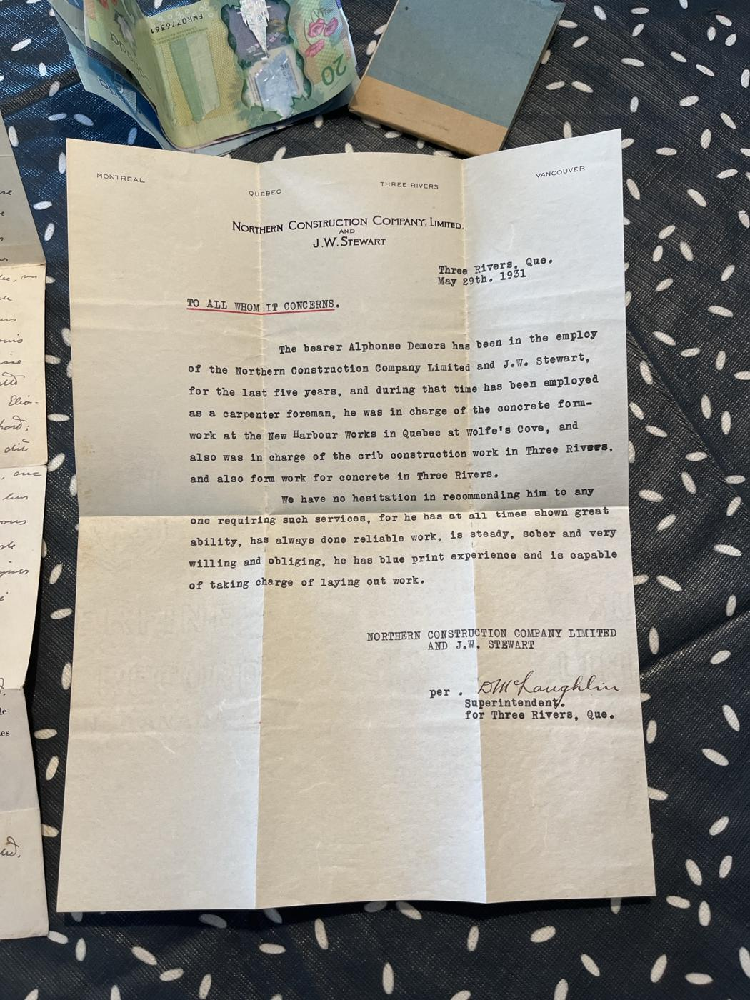
Lettre originale, en anglais, Trois-Rivières, 29 mai 1931.
Alphonse, contremaître charpentier.
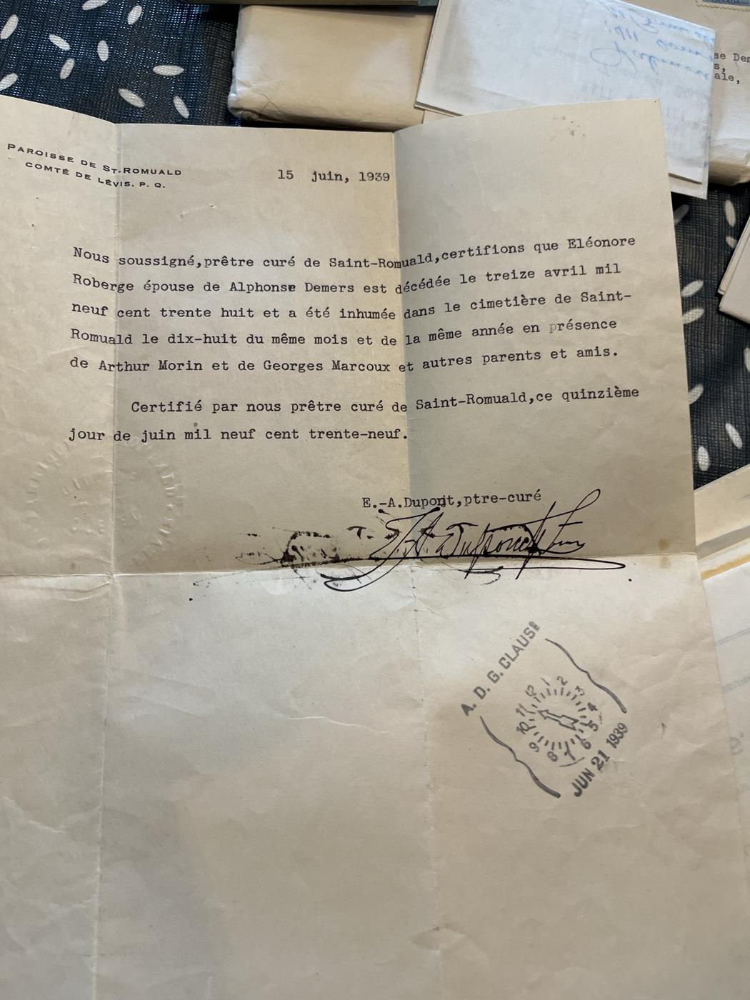
Certificat du curé E.-A. Dupont, Saint-Romuald, 15 juin 1939.
Mort de l'épouse d'Alphonse, le 13 avril 1938.
Les textes sont donnés tels qu'ils sont écrits, avec l'orthographe d'époque. Les crochets signalent une lecture incertaine [ ? ], un mot rayé ou une note du transcripteur.
« […] au nord à la grève du fleuve St Laurent, d'un côté au nord-est à Veuve Charles Ward et d'autre côté au sud-ouest à John Cullen, avec maison dessus construite, circonstances et dépendances. Le dit emplacement porte le numéro cinq cent vingt-neuf (529) des plan et livre de renvois officiels du cadastre dans et pour la paroisse de St Romuald, comté de Lévis. Tel et ainsi que le tout se poursuit, comporte de fond en comble et s'étend de toutes parts, et dont le dit acquéreur se déclare content et satisfait pour le tout bien connaître et l'avoir vu et visité. Appartenant à la dite Dame John Brown pour l'avoir eu par testament de feu Sieur Arthur Brown, reçu en présence du notaire soussigné et témoins le quatrième jour de septembre mil huit cent quatre-vingt-six. […] Cette vente est faite pour et moyennant le prix et somme de cinq cent piastres courant, payable comme suit, savoir : la somme de cent piastres courant dès l'exécution des présentes, dont quittance d'autant ; quant à la balance, il la paiera comme suit : cent piastres le vingt-deuxième jour de novembre mil huit cent quatre-vingt-sept et ensuite cent piastres par année à pareille date jusqu'au parfait paiement, le tout sans intérêt ; si les paiements ne se faisaient pas régulièrement, l'intérêt serait de six par cent par année. Cette vente est faite à la charge par le dit acquéreur […] de payer annuellement au premier octobre de chaque année à Sieur Théophile Hallé, ses héritiers et ayants cause, une rente foncière et constituée de huit piastres courant par année. A la charge en outre de se conformer strictement à toutes les charges, clauses et conditions et réserves mentionnées et énumérées en le contrat de concession du vingt et un de novembre mil huit cent soixante, en présence de Étienne Simard et son confrère, notaires. […] Fait et passé à St Romuald, en l'étude de Me M. U. Damien [Séguré ?], notaire, l'an mil huit cent quatre-vingt-six, le vingt-troisième jour du mois de novembre, après-midi, sous le numéro deux mille cent quinze des minutes du notaire soussigné. […] (Signé) “Matilda [Moffet ?] Brown”, “John Brown”, “Robert Ahern”, “M. U. Damien [Séguré ?] N.P.” »
« L'an mil neuf cent quatre, le quinzième jour du mois de novembre ; Devant Jean Théophile Lemieux, notaire public pour la province de Québec, résidant et pratiquant en la paroisse de St-Romuald d'Etchemin, soussigné, et en présence de Messieurs Honoré McReady, marchand, et Paul Girard, inspecteur de bois, tous deux de la paroisse de St-Romuald d'Etchemin, témoins exprès demandés au présent testament. A comparu : Sieur Louis Demers de la paroisse de St-Romuald d'Etchemin, boucher, étant en santé de corps, sain d'esprit, mémoire, jugement et entendement ainsi qu'il a paru aux dits notaire et témoins ci-dessus nommés : Lequel a dans la vue de la mort fait et dicté son présent testament au dit notaire en la présence actuelle et constante des dits témoins ainsi qu'il suit, savoir : 1o Je recommande mon âme à Dieu et le prie de lui faire miséricorde. 2o Je veux qu'avant tout mes dettes soient payées et mes torts, s'il y a, scrupuleusement réparés par mon exécutrice testamentaire ci-après nommé à la discrétion de laquelle je m'en rapporte pour le soin de mes funérailles, messes et prières, voulant néanmoins qu'un service soit chanté sur mon corps le jour de mes funérailles et un autre service dans l'an de mon décès aussi que vingt-cinq messes basses soient dites le plus tôt possible après mon décès pour le repos de mon âme. 3o Je donne et lègue à Dame Léocadie Beaudoin mon épouse actuelle tous mes biens meubles et immeubles que je délaisserai au jour de mon décès de quelque nature et valeur qu'ils soient et en quelque lieu qu'ils soient dûs et situés, l'instituant ma légataire universelle et mon exécutrice testamentaire. 4o Je révoque tous autres testaments et codicilles que je pourrais avoir faits avant celui-ci. […] Dont acte, fait et passé en la paroisse de St-Romuald d'Etchemin, au domicile du dit testateur, les jours, mois et an susdit sous le numéro deux mille trois cent trente-sept des minutes du notaire soussigné. […] (Signé) “Louis Demers”, “Honoré McReady”, “Paul Girard”, “J. Théo. Lemieux N.P.” Vraie copie de la minute de record en mon étude. Vingt-huit mots rayés sont nuls. »
« Extrait du Registre des baptêmes, mariages et sépultures de la paroisse de Saint-Romuald d'Etchemin, pour l'année mil neuf cent huit. Le quinze juin mil neuf cent huit, vu la dispense de deux bans de mariage et du troisième degré de consanguinité, accordée le [treize ?] du courant par Monseigneur [E.] A. Marois, V.G. de Sa Grandeur Monseigneur L. N. Bégin, archevêque de Québec, vu la publication d'un autre ban faite au prône de notre messe paroissiale entre Alphonse Demers, domicilié en cette paroisse, fils mineur de Louis Demers et de Léocadie Beaudoin de cette paroisse, d'une part ; et Eléonore Roberge, domiciliée en cette paroisse, fille mineure de David Roberge et de Eléonore Couture, aussi de cette paroisse, d'autre part ; ne s'étant découvert aucun empêchement au dit mariage, nous, prêtre curé soussigné, avons, avec l'agrément des pères des époux mineurs, reçu leur mutuel consentement de mariage et leur avons donné la bénédiction nuptiale en présence de Damase Vallières, qui a déclaré ne savoir signer, et de Louis Roberge [sic : Louis Demers], père de l'époux, soussigné avec les époux. Lecture faite. (Signé) Eléonore Roberge, Alphonse Demers, Louis Demers, [H. ?] Richard, ptre. » — Extrait certifié conforme le 8 avril 1918 par J. L. Dufresne, ptre, vicaire.
« L'an mil neuf cent douze, le vingt deuxième jour du mois de novembre ; Devant Jean Théophile Lemieux, notaire public pour la province de Québec, résidant et pratiquant en la paroisse de St Romuald d'Etchemin, soussigné ; A comparu : Dame Léocadie Beaudoin de la paroisse de St Romuald d'Etchemin, veuve de feu Louis Demers, ce dernier en son vivant du même lieu, boucher et commerçant de bois. Laquelle donne par les présentes avis à Monsieur le Régistrateur du comté de Lévis que son dit époux, feu Louis Demers, est décédé en la dite paroisse de St Romuald d'Etchemin le trentième jour du mois de octobre dernier après avoir fait recevoir son testament authentique par le notaire soussigné, le quinze novembre mil neuf cent quatre, lequel testament n'a pas été révoqué ni changé. Que par son susdit testament le dit Louis Demers a institué la dite comparante sa légataire universelle et son exécutrice testamentaire. Qu'au nombre des biens légués à la dite comparante se trouve la moitié indivise de l'immeuble suivant sur laquelle la dite comparante requiert l'enregistrement de ses droits de propriété, et l'autre moitié indivise appartenant déjà à la dite comparante comme étant sa part de communauté de biens, savoir : Un emplacement contenant cinquante pieds de front sur environ cent pieds de profondeur, étant le lot numéro cinq cent vingt-neuf (529) du cadastre de la paroisse de St Romuald d'Etchemin, comté de Lévis, avec bâtisses, circonstances et dépendances ; Cette déclaration est ainsi faite en conformité à l'article deux mille quatre-vingt-dix-huit du code civil du Bas Canada et pour valoir ce que de droit. Dont acte […] sous le numéro trois mille sept cent soixante des minutes du notaire soussigné. Après lecture faite des présentes à la dite comparante, elle a signé avec nous notaire. (Signé) “Léocadie Beaudoin” “Demers” “J. Théo. Lemieux N.P.” »
« L'an mil neuf cent quatorze, le trente-unième jour du mois de juillet. Devant Joseph Boutin Bourassa, Notaire Public pour la Province de Québec, résidant et pratiquant à St Romuald. A comparu Madame Léocadie Beaudoin, de la paroisse de St Romuald, veuve de feu Louis Demers, en son vivant du même lieu, commerçant. Laquelle nous a requis de recevoir son testament qu'elle a, en présence de Docteur Narcisse G. Cantin, de St Côme [?], Beauce, médecin, et Ernest Robitaille, employé civil, de la dite paroisse de St Romuald et témoins aux présentes, fait comme suit, savoir : 1o — Je lègue à Alphonse Demers, mon fils, tous mes meubles de ménage, sans exception, ainsi que mon immeuble situé à St Romuald, division New Liverpool, avec les bâtisses dessus construites. Mais, dans le cas où il mourrait avant moi et que je ne pourrais faire de testament avant mon décès pour disposer des dits biens ci-dessus légués, je veux qu'ils retournent et appartiennent aux enfants du dit Alphonse Demers, par parts égales ; 2o — Je lègue tous mes linges, lingerie et vêtements, sans exception ni réserve, à mes enfants nés de mon mariage avec le dit feu Louis Demers, mon époux, à l'exception du dit Alphonse Demers, pour être partagés entre eux par parts égales par mon exécuteur ci-après nommé ; 3o — Je veux que, sur les argents que je posséderai à mon décès, qu'il soit pris une somme de quatre cents piastres pour payer mes soins de dernière maladie, mes funérailles, pour me faire chanter deux services, le premier au coût de cinquante-six piastres, lors de mon décès, le second, au coût de trente piastres, un an après mon décès, et la balance pour faire chanter des grandes messes pour le repos de mon âme, aussitôt possible après mon décès ; 4o — Je lègue le reste de mes argents et les autres biens que je posséderai à mon décès aux enfants nés de mon mariage avec le dit Louis Demers, même et y compris le dit Alphonse Demers, pour être partagés entre eux par parts égales par mon exécuteur testamentaire. 5o — Je nomme pour mon exécuteur testamentaire Charles Demers, mon fils, et je veux qu'il reste en fonction au-delà de l'an et jour fixés par la loi, c'est-à-dire jusqu'à l'entière exécution de mon présent testament. Si ce dernier meurt ou devient incapable de voir à l'exécution de mon présent testament, je nomme mon autre fils, Joseph Demers, pour le remplacer. 6o — Je donne à mon exécuteur testamentaire le pouvoir de faire le partage de mes biens mentionnés dans les articles deux et quatre de mon présent testament, d'une manière juste et au meilleur de son jugement et suivant sa conscience, et je veux que sa décision soit finale et sans appel. 7o — Je révoque tout autre testament et codicille que j'aurais pu faire avant le présent auquel je m'arrête. Dont acte : fait et passé à St Romuald, étude du notaire soussigné, sous le numéro six mille huit cent quatre-vingt-quatre. […] (Signé) “Léocadie Beaudoin” “N. G. Cantin, M.D.” “Ernest Robitaille” “J. Boutin Bourassa, N.P.” »
« À qui de droit. Nous certifions qu'Alphonse Demers est au service de la compagnie depuis quatre ans comme charpentier à la construction du pont de Québec. C'est un bon ouvrier, régulier ; nous l'avons toujours trouvé attentif et pleinement satisfaisant dans tout son travail, et nous le recommandons volontiers à quiconque cherche un charpentier de premier ordre. » Original anglais : « This is to certify that Alphonse Demers has been in the employ of this Company for the past 4 years as Carpenter on the construction of the Quebec Bridge. […] »
Treize articles de travaux pour « la maison d'école de St Romuald d'Etchemin (New Liverpool) » : rehausser l'étage supérieur ; ajouter deux ventilateurs dans chaque classe « de manière à fournir le plus d'air possible aux élèves » ; lambris d'épinette recouvert de bardeau d'amiante ; solage et perrons de béton, avec soupiraux pour la cave ; déplacer l'escalier ; toiture en bardeaux de cèdre ou de pin ; portes neuves à double vitrage ; peinture ; un hangar à bois de 12 sur 18 pieds d'une valeur de 300 $ ; un tambour d'entrée temporaire. Signé : Henri Dutil.
« L'an mil neuf cent vingt-huit, le onzième jour du mois de Août. Devant Joseph Boutin Bourassa, Notaire Public pour la Province de Québec, résidant et pratiquant à St-Romuald. A comparu Madame Léocadie Beaudoin, de la paroisse de St-Romuald, veuve de feu Louis Demers, en son vivant du même lieu, commerçant. Laquelle a donné, par voie et à titre de donation entre-vifs, à Alphonse Demers, du même lieu, son fils, ce acceptant, savoir : Un emplacement contenant quarante pieds de front, sur environ cent pieds de profondeur, borné au sud par le chemin public, au nord, à la rive du fleuve St-Laurent, au nord-est à Alfred [corrigé à la main : Adélard] Cadoret et au sud-ouest à Xavier [Irénée ?] Proulx, avec la maison et autres bâtisses dessus construites, connu et désigné sous le numéro cinq cent vingt-neuf (529) du cadastre pour la paroisse de St-Romuald, Comté de Lévis ; Tout son ameublement de maison, ainsi que les linges et lingerie qui se trouvent actuellement dans la maison construite sur l'immeuble ci-haut décrit, le tout sans exception ni réserve ; Donne de plus la donatrice au donataire la somme de cent piastres à elle due par le dit donataire en capital et intérêts. Cette donation est faite à la charge par le donataire des taxes et cotisations municipales et scolaires et d'une rente foncière annuelle de six piastres, payable à Jules Hallé, de St-Romuald. Encore à la charge par le donataire de recevoir chez lui la donatrice quand elle voudra y aller demeurer et, alors, de la nourrir et entretenir convenablement et comme le doit faire un bon fils pour sa mère ; sans garantie hypothécaire. Dont acte : fait et passé à St-Romuald, demeure du donataire, sous le numéro dix mille cent trente-quatre. Et, après lecture faite, les parties ont signé avec moi, Notaire. (Signé) “Léocadie Beaudoin” “Alphonse Demers” “J. Boutin Bourassa, N.P.” »
« À qui de droit. Le porteur, Alphonse Demers, est au service de la Northern Construction Company Limited et J. W. Stewart depuis cinq ans, comme contremaître charpentier. Il a eu la charge des coffrages de béton des nouveaux travaux du port de Québec, à l'Anse-au-Foulon, de la construction des caissons à Trois-Rivières, et des coffrages de béton à Trois-Rivières. Nous le recommandons sans hésiter à quiconque a besoin de tels services : il a toujours montré beaucoup de compétence et fait un travail sûr ; il est régulier, sobre, très dévoué et serviable ; il sait lire les plans et peut diriger l'implantation des ouvrages. »
« Nous soussigné, prêtre curé de Saint-Romuald, certifions que Eléonore Roberge épouse de Alphonse Demers est décédée le treize avril mil neuf cent trente huit et a été inhumée dans le cimetière de Saint-Romuald le dix-huit du même mois et de la même année en présence de Arthur Morin et de Georges Marcoux et autres parents et amis. Certifié par nous prêtre curé de Saint-Romuald, ce quinzième jour de juin mil neuf cent trente-neuf. E.-A. Dupont, ptre-curé. »
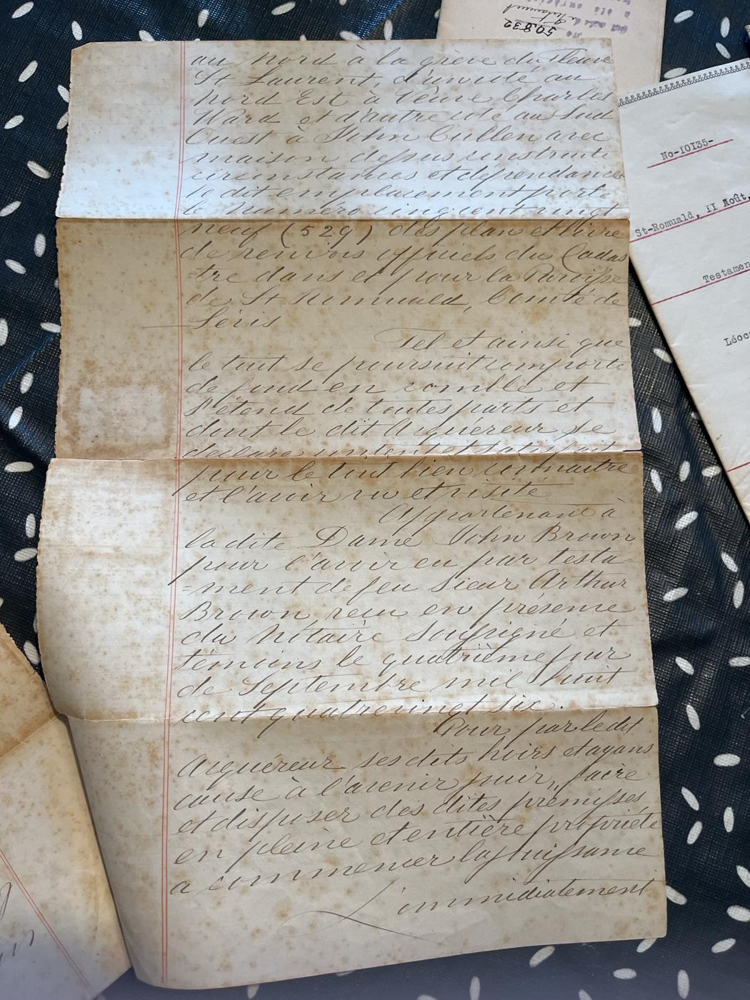
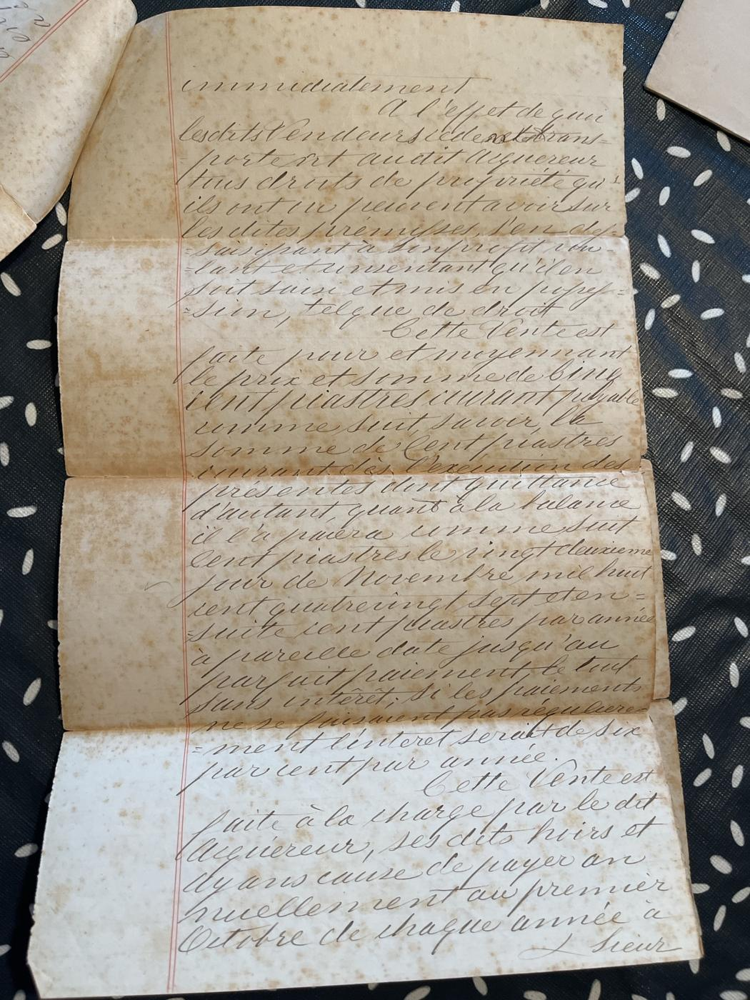
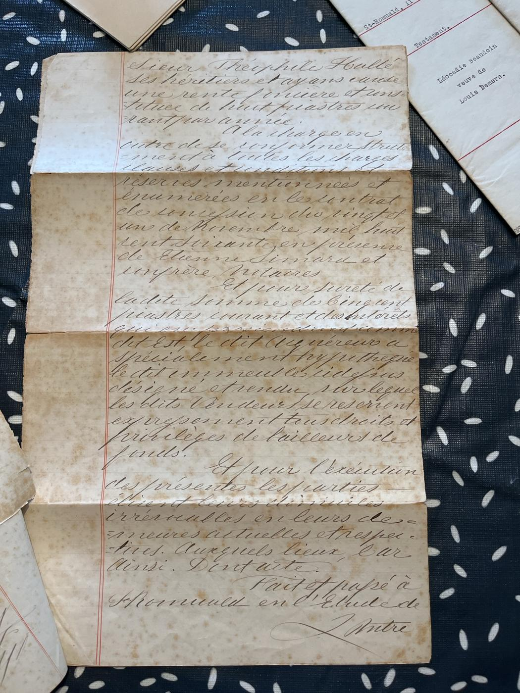
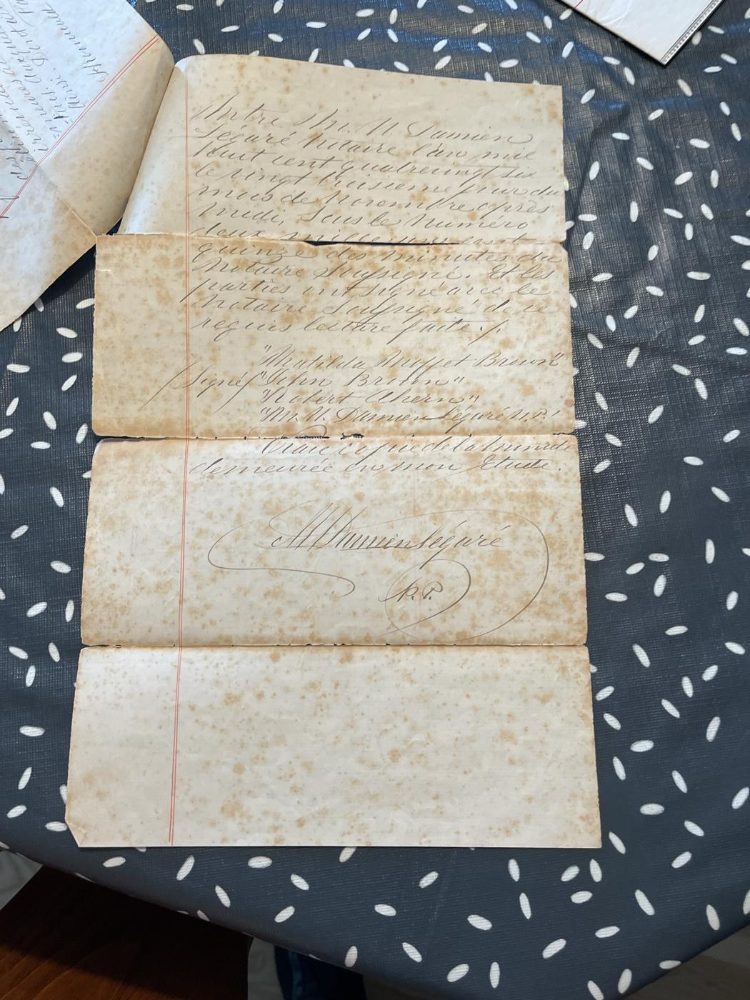
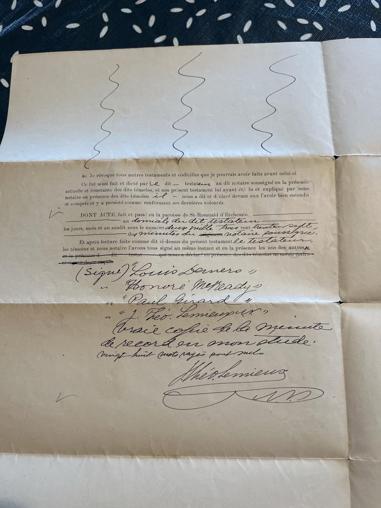
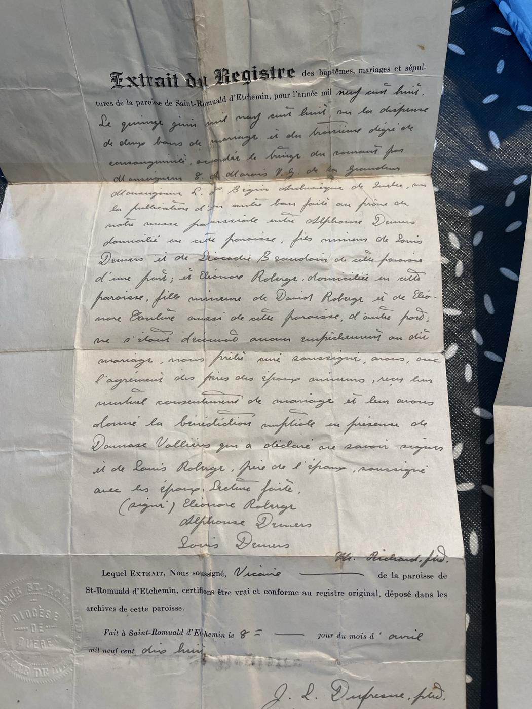
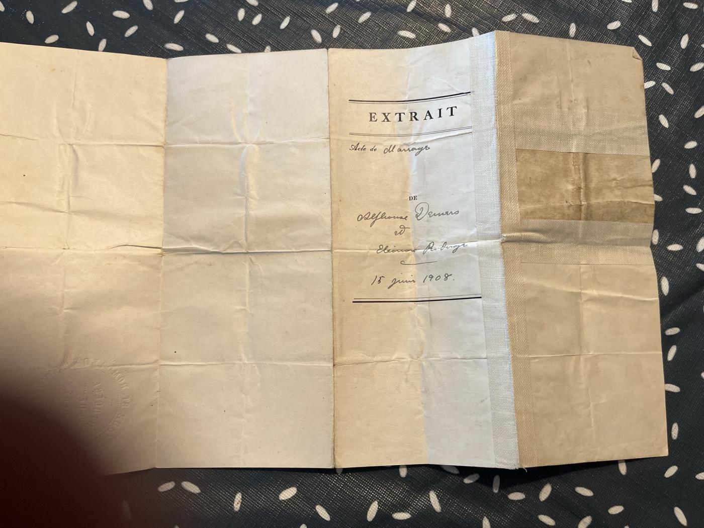
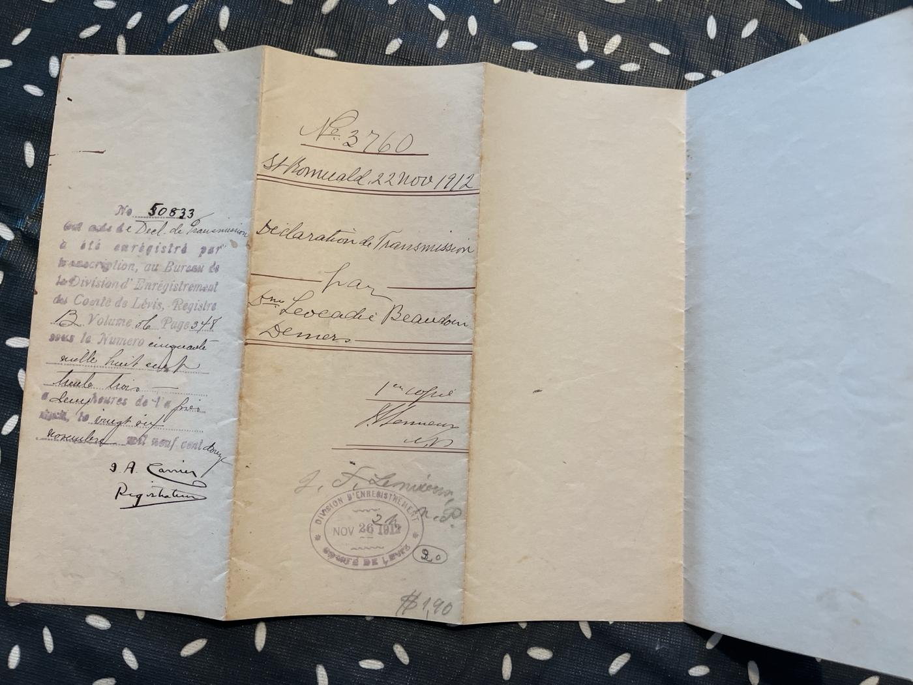
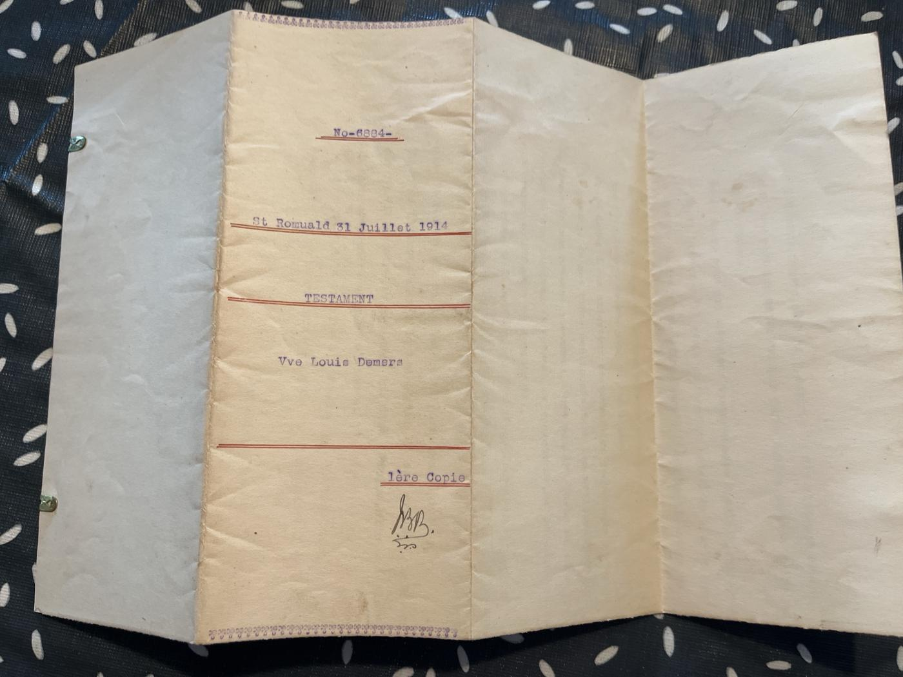
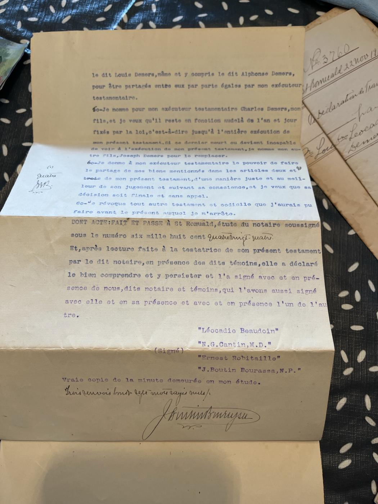
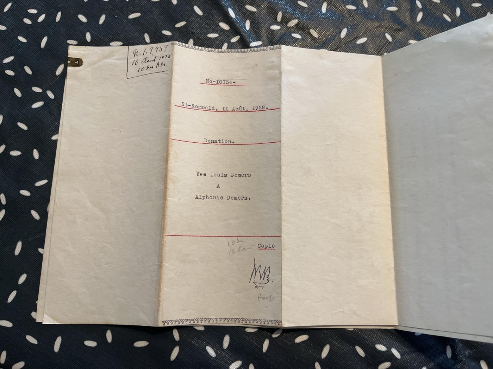
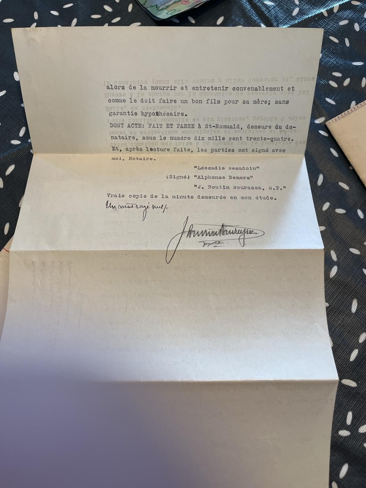